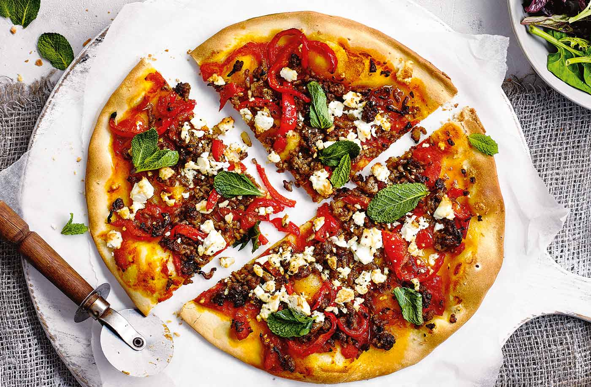

Speedy Turkish pizzas recipe

Description
Dreaming of a takeaway? Why not make your own with this speedy pizza recipe using pre-made pizza dough to save time. Loaded with spiced lamb mince and crumbled salad cheese, this Turkish-inspired pizza really packs a punch and will definitely go down well at dinnertime. You can even make the mince mixture the day before to save time.
Ingredients
- 1 tbsp olive oil, plus 2 tsp to drizzle
- 1 onion, finely chopped
- 2 garlic cloves, crushed
- 250g pack lamb mince 10% fat
- 1 red pepper, thinly sliced
- ½ tsp ground cumin
- ½ tsp ground coriander
- ½ tsp crushed chillies
- 2 x 280g packs ready-rolled pizza dough
- ½ x 390g carton Italian chopped tomatoes with olive oil and garlic
- 100g reduced-fat salad cheese, crumbled
- 15g fresh mint leaves, picked
- salad leaves, to serve (optional)
Steps
- Preheat the oven to gas 7, 220°C, fan 200°C. In a large frying pan, heat 1 tbsp oil over a medium heat and add the onion and garlic. Gently fry for 5-8 mins until softened. Add the lamb mince and pepper and fry for 3-4 mins until browning. Pour off and discard the excess liquid and fat from the mince, then add the spices and fry for 2-3 mins until fragrant. Set aside
- Unroll the pizza dough and place each one on a baking sheet. Spread half the chopped tomatoes over each base, leaving a 2cm border. Top with the lamb mix and cheese, and drizzle each with 1 tsp oil. Bake the pizzas for 10-15 mins until golden. Scatter with mint leaves and serve half a pizza each with salad leaves, if you like.
Get ahead:You can prepare the mince mixture up to 24 hrs ahead; cool and keep covered in the fridge. It will also freeze for 1 month